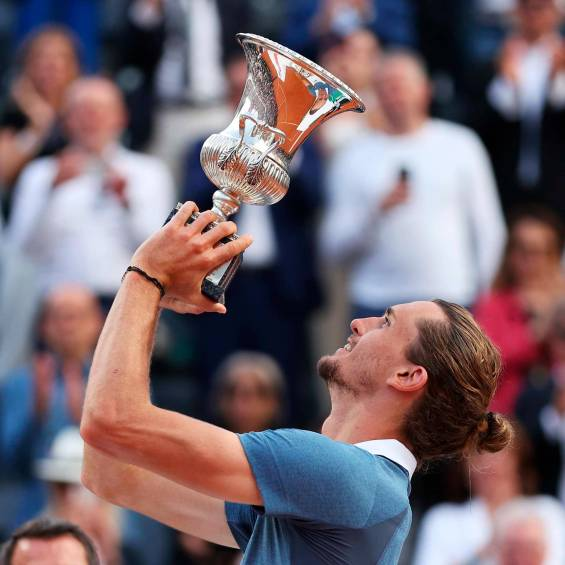
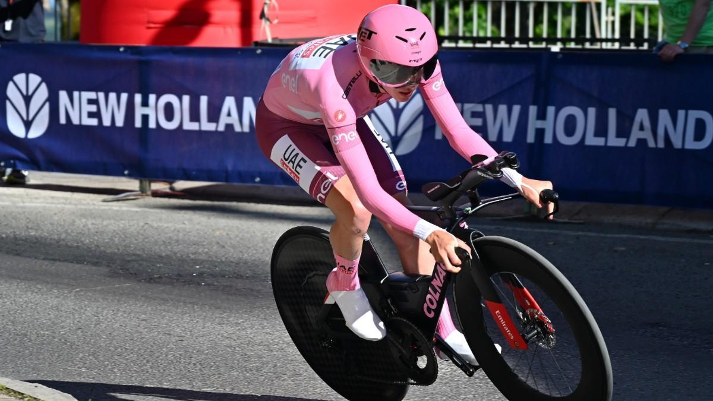

Palabras que dijo Joselu despues de meter el gol del encuentro ante el bayern de munich, el cual decidio la eliminatoria
Real Madrid perdía con marcador de 1-0 ante el Bayern Múnich, pero Joselu ingresó para cambiar la historia del partido con su doblete. El primer gol llegó en el minuto 75, cuando Joselu recibió un centro preciso de Luka Modrić y remató de cabeza para igualar el marcador. El estadio Santiago Bernabéu estalló en júbilo. Luego, en el minuto 89, aprovechó un error defensivo del Bayern para anotar el segundo gol, asegurando así la clasificación del equipo a la final.
Con este resultado, el equipo madrileño asegura su pase a la final, donde enfrentará al ganador del duelo entre Manchester City y PSG. La afición merengue celebra con júbilo esta nueva oportunidad de conquistar otro título europeo. Los jugadores, junto con el entrenador Carlo Ancelotti, destacaron la importancia de mantener la calma y la confianza en momentos críticos del partido. El capitán, Karim Benzema, también expresó su orgullo por el equipo: "Hemos trabajado duro toda la temporada para llegar hasta aquí y vamos a darlo todo en la final".
La noche fue mágica para Joselu, quien no solo se convirtió en el héroe del partido, sino que también reforzó su lugar en el corazón de los aficionados. Tras el pitido final, el estadio coreaba su nombre mientras sus compañeros lo abrazaban en una celebración efusiva. Ahora, el Real Madrid se prepara para enfrentar el próximo desafío con la esperanza de añadir otra estrella a su ya ilustre historia en la Liga de Campeones.
BALONCESTO 🏀
NBA
LOS TIMBERWOLVES REMONTAN UNA ELIMINATORIA HISTORICA ANTE DENVER
Las finales de Conferencia que coronarán a una estrella: Doncic contra Edwards y Boston ante la revolución
Por sexto curso seguido habrá un campeón diferente en la NBA, tras los títulos conseguidos por Denver Nuggets, Golden State Warriors, Milwaukee Bucks, Los Angeles Lakers y Toronto Raptors. No ocurría algo similar desde el periodo comprendido entre la temporada 1974-75 y la 1979-80. Cada uno de estos equipos ha sido fiel a su estilo, pero en la temporada 2023-24, varios llegan sufriendo mientras otros dominan con autoridad. Pero lo importante es que llegan, y ahí es donde realmente empieza la fiesta del baloncesto.
Denver, con su imponente juego de equipo y la brillantez de Nikola Jokić, logró romper la maldición del campeonato para la franquicia. Golden State, conocido por su letal ataque de tres puntos liderado por Stephen Curry, demostró que la experiencia y la precisión pueden superar cualquier obstáculo. Milwaukee, con Giannis Antetokounmpo a la cabeza, conquistó el título con una combinación de fuerza física y habilidades extraordinarias. Los Lakers, con la legendaria dupla de LeBron James y Anthony Davis, añadieron otro anillo a su ya impresionante colección. Toronto, sorprendentemente, se llevó el título con un enfoque defensivo sólido y el liderazgo de Kawhi Leonard.
Esta diversidad en los campeones refleja la riqueza de estilos y estrategias en la NBA moderna. En la presente temporada, algunos equipos han tenido que superar adversidades, lidiar con lesiones y remontar series complicadas, mientras que otros han navegado con relativa facilidad hacia las rondas finales, mostrando un dominio indiscutible. Sin embargo, independientemente del camino recorrido, todos ellos comparten la capacidad de llegar a las instancias decisivas, donde cada partido es una batalla y cada jugada puede marcar la diferencia entre la gloria y la derrota.
La emoción está garantizada, y los aficionados esperan con ansias ver quién se coronará esta vez como el nuevo campeón de la NBA, continuando con esta fascinante racha de diversidad en la cima del baloncesto profesional.
TENIS 🎾
Masters Roma
Zverev se proclama como campeon del masters de Roma

El aleman se proclamo ganador ante el Chileno Jarry
A falta de 12 dias para el juicio por supuesto maltrato a su expareja zverev se impone con un solido 6-4 7-5, el aleman volvio a conquistar en arcilla ante Jarry.
Zverev, bajo la presión de las próximas audiencias legales, mostró una notable capacidad para mantener su enfoque en el tenis. Su victoria sobre Jarry en este partido refleja no solo su destreza técnica sino también su fortaleza mental en medio de las controversias fuera de la cancha. La actuación de Zverev fue una combinación de potentes saques, consistencia en los intercambios y una estrategia eficaz para desmantelar el juego de su oponente chileno.
Este triunfo en arcilla es significativo para Zverev, no solo por el contexto personal complicado que atraviesa, sino también por reafirmar su dominio en una superficie donde ha tenido éxito en el pasado. La victoria sirve como un recordatorio de su talento y potencial para seguir siendo un contendiente formidable en el circuito ATP, independientemente de los desafíos personales que enfrenta.
Con el juicio acercándose, el rendimiento de Zverev en la cancha será observado de cerca, no solo por sus seguidores y detractores, sino también por los analistas y expertos del deporte que intentan separar su vida personal de su carrera profesional. Por ahora, su victoria contra Jarry destaca su capacidad para competir al más alto nivel, enfocándose en su juego y dejando de lado, al menos temporalmente, las preocupaciones legales que se ciernen sobre él.
OTRAS NOTICIAS
Boxeo 🥊
El brutal nockeo de Usyk ante Fury que dio la vuelta al mundo
Celebridades de todo el mundo como Neymar, Cristiano Ronaldo o Ryan Garcia estuvieron presentes ante uno de los mejores combates de la historia del boxeo
Neymar, conocido por su pasión por los deportes más allá del fútbol, disfrutó del combate desde una posición privilegiada, compartiendo su entusiasmo en las redes sociales. Cristiano Ronaldo, siempre elegante, fue captado por las cámaras mientras observaba atentamente cada ronda, demostrando su interés por el boxeo y apoyando a sus amigos dentro de la industria deportiva. Ryan Garcia, el joven y talentoso boxeador, también se encontraba entre los asistentes, posiblemente buscando inspiración y observando técnicas de los mejores.
El combate, que tuvo lugar en un escenario repleto de glamour y sofisticación, se desarrolló con una intensidad y un dramatismo que mantuvo a todos los espectadores al borde de sus asientos. Los pugilistas demostraron una habilidad técnica y una resistencia física extraordinarias, entregando un espectáculo que será recordado por años. La presencia de tantas figuras destacadas del mundo del deporte y el entretenimiento subrayó la magnitud del evento y su importancia en la cultura deportiva global.
Al final del combate, las celebridades no dudaron en expresar su admiración y respeto por los boxeadores, quienes habían dejado todo en el ring. Las redes sociales se llenaron de mensajes y fotos del evento, con Neymar, Cristiano Ronaldo y Ryan Garcia compartiendo su experiencia y destacando la grandeza de lo que acababan de presenciar. Sin duda, este combate ha dejado una marca imborrable en la historia del boxeo y en la memoria de todos los que tuvieron la fortuna de verlo en persona.
GIRO DE ITALIA 🚴

Pogacar seduce a la reina: apaga el sueño de Nairo en Livigno y se cita con la historia
Este lunes llega la segunda jornada de descanso tras otra genial exhibición del esloveno en Livigno
Tadej Pogačar, conocido por sus impresionantes habilidades en el ciclismo, deslumbró una vez más con su rendimiento en las montañas italianas, consolidándose como uno de los favoritos en la competición.
La etapa en Livigno, caracterizada por sus exigentes ascensos y su terreno desafiante, fue testigo de la maestría de Pogačar, quien no solo demostró su resistencia y fuerza, sino también su capacidad estratégica para atacar en el momento preciso. Su actuación dejó atrás a varios de sus competidores, aumentando la brecha en la clasificación general y reafirmando su dominio en esta edición del torneo.
Los espectadores y expertos no pudieron evitar elogiar la destreza del esloveno. Su habilidad para manejar las pendientes empinadas y su inquebrantable determinación se hicieron evidentes, ya que Pogačar parecía imparable mientras avanzaba hacia la meta. Cada pedalada fue un testimonio de su arduo entrenamiento y su talento natural, aspectos que lo han catapultado a la cima del ciclismo mundial.
Con la segunda jornada de descanso a la vista, los equipos y ciclistas aprovecharán para recuperarse y preparar sus estrategias para las etapas restantes. Pogačar, sin embargo, se encuentra en una posición envidiable, con una ventaja que le permite planificar sus próximos movimientos con relativa tranquilidad. No obstante, el ciclismo es un deporte impredecible, y la competencia seguramente traerá nuevas sorpresas y desafíos.
Mientras tanto, los aficionados seguirán hablando de la exhibición de Pogačar en Livigno, un recordatorio de por qué es considerado uno de los mejores ciclistas de su generación. Con más etapas emocionantes por delante, todos los ojos estarán puestos en él, esperando ver si puede mantener su impresionante forma y llevarse el título al final de la competición.